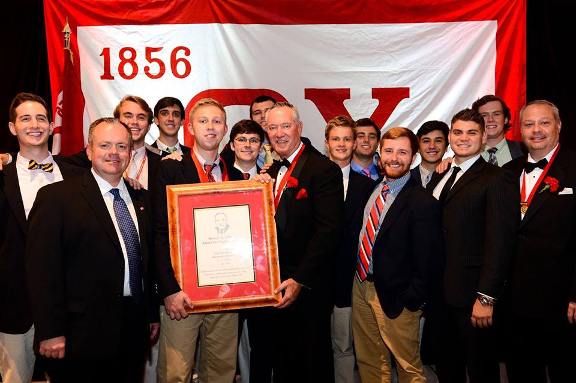

Theta Chi
 Symbols: ΘΧ President: Clayton Abernathy | (703) 225-9031 | abernathy.clayton@gmail.com Recruitment: Andrew Betts | (859) 533-9995 | andrewmfbetts@gmail.com 119 Members GPA: 3.03 National Website http://kentuckythetachi.com Major community service or philanthropy events: Shake The Stress Week Service Night at BD's Mongolian Grill (proceeds to charity) Dance Blue (Dancers and Volunteers) Kentucky's Got Talent Volunteer Service at Ronald McDonald West Liberty Tornado Relief Service Buffalo Wild Wings Percentage Night Bourbon n' Toulouse Percentage Night Recent Awards: 2012 Greek Week Banquet 2014 Outstanding Advisor Award Robert Leitch 2014 Alter Award for National Chapter Excellence National History: Theta Chi was founded as the Theta Chi Society on April 10, 1856, at Norwich University, by two military cadets: Frederick Norton Freeman and Arthur Chase. Freeman and Chase met in Freeman's room of the University's Old South Barracks, and after taking oaths and declaring each other "true and accepted members" of the Society, Chase was elected President and Freeman was elected Secretary. The next evening, Freeman and Chase initiated two more cadets: Edward Bancroft Williston and Lorenzo Potter. Although Theta Chi is regarded as Norwich's first fraternity, it is believed that Freeman and Chase may also have been members of a secret society called The Regulators prior to founding Theta Chi. However, whether there was any connection between the Regulators and Theta Chi is still open for debate today. In its first decade, the Fraternity faced a number of challenges. First, because Norwich was a military school, the University lost a large number of cadets to the Civil War between 1861 and 1865. Second, a massive fire erupted on the Norwich campus in the spring of 1866, destroying the Old South Barracks and many of the Fraternity's historical records that had been kept inside. The University relocated to its present location in Northfield, Vermont, shortly thereafter. After the fire in 1866 there was doubt for a while as to whether or not the University would continue to operate. Between the aftermath of the war, the fire, and the general uncertainty regarding the University's future, enrollment at Norwich dropped dramatically. Norwich opened its doors that fall with only 19 students. Despite the low enrollment numbers, however, Theta Chi and another fraternity, Alpha Sigma Pi, flourished. In 1881, the student body of Norwich comprised 12 students, and Theta Chi found itself with only one active member, James M. Holland. Holland, with the help of local alumni, managed to keep the Fraternity afloat by recruiting two new initiates, Phil S. Randall and Henry B. Hersey. Holland is generally credited with saving Theta Chi from an otherwise likely extinction. After 1888 the affairs of the University took a decided turn for the better, and Alpha chapter flourished at Norwich until 1960, when Norwich disbanded all of its fraternities. From the very beginning, Theta Chi's founders intended for the Fraternity to be national in scope. However, Theta Chi existed as a single chapter for nearly 50 years due to the conservative nature of the brothers at Norwich. On December 13, 1902, that trend finally reversed with the installation of Beta Chapter at the Massachusetts Institute of Technology. Spearheaded by Brother Park V. Perkins, Theta Chi's arrival at MIT launched a new era for the Fraternity. The early 1900s was a period of rapid expansion. Although hindered by the Great Depression and two world wars, Theta Chi grew and prospered in ways far beyond what even its founders had envisioned. If our Founders could see us today, they would surely be proud of what they saw. Over 160,000 men have been initiated into the Fraternity since its founding. On April 9, 2011, Theta Chi installed its 220th chapter. *taken from thetachi.org Chapter history: Our University of Kentucky Zeta Rho chapter is made up of a diverse group of men who embrace the balance between scholarship, athletics, networking with local alumni, and socializing with UK sororities. Theta Chi is not the stereotypical fraternity - rather a lifelong experience. Theta Chi's are "down to earth" and support one another in building better men and preparing brothers for experiences beyond UK. If you are interested in leadership opportunities, building lasting friendships, making a difference, and being challenged to a greater good, then THETA CHI IS THE FRATERNITY FOR YOU! We are committed to building better men and look forward to sharing the Theta Chi experience with you. Zeta Rho has been revived at the University of Kentucky after an unsuccessful period in the 1970's. Zeta Rho has experienced tremendous growth and on-campus recognition within the short period of 3 years. The future looks bright for Zeta Rho. Founding dates: National- April 10, 1856 Local- December 3rd, 2011 Motto and creed: Maxim- "Alma Mater first, and Theta Chi for Alma Mater." Creed- "I believe in Theta Chi, its traditions and its ideals. Born of sturdy manhood, nurtured by resolute men, ennobled by high and sacred purpose, it has taken its place among the educational institutions of America as a promoter of knowledge, an advancer of culture and a builder of character. It inspires true friendship: teaches Truth, Temperance and Tolerance, extols virtue, exacts harmony, and extends a helping hand to all who seek it. I believe in the primacy of Alma Mater; in the usefulness of my Fraternity, in its influence and its accomplishments and I shall do all in my power to perpetuate its ideals, thereby serving my God, my country and my fellow-man." Chapter colors: Military Red and White